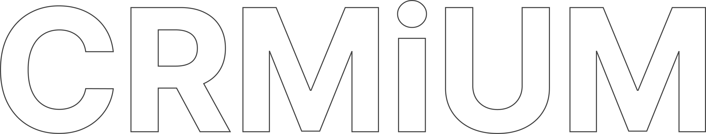
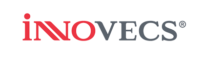
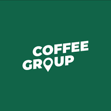
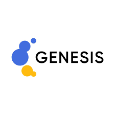

Zoho — це не просто CRM.
Це екосистема.
Повноцінна бізнес-платформа для автоматизації малого та середнього бізнесу.
Павло Яковенко
Засновник CRMiUM. Запустив Zoho в Україні у 2016 році, фактично став першим інтегратором-партнером Zoho на українському ринку. 10+ років системних впроваджень Zoho для бізнесу різного масштабу — від невеликих команд до системного середнього бізнесу.
Інтегратор CRM/ERP систем
Стек: Zoho · Odoo · Creatio · Salesforce
Про що сьогодні поговоримо
- Що таке Zoho як екосистема — і чим відрізняється від звичайної CRM
- Як почалась історія Zoho в Україні (мій особистий шлях із 2016)
- Адаптація Zoho до українського ринку
- Глобальна історія Zoho — 30 років розвитку
- Zoho + AI: новий етап розвитку екосистеми
- Zoho vs «зоопарк систем» — чому єдина платформа виграє
Zoho як екосистема
Не окрема CRM. Платформа з 60+ застосунками.
Дві категорії бізнес-систем
Вузькоспеціалізовані рішення
- CRM
- Таск-менеджер
- Бухгалтерія
- Email-маркетинг
- Сервіс підтримки
Кожен закриває одну конкретну задачу
Екосистеми
- Об'єднують велику кількість бізнес-процесів
- В єдиному середовищі
- З наскрізною інтеграцією
- Спільною логікою даних
- І єдиною автоматизацією
Саме до таких належить Zoho
Не CRM. Масштабна бізнес-платформа.
У межах Zoho компанія може керувати
- Продажами
- Маркетингом
- Підтримкою клієнтів
- Фінансами
- HR-процесами
- Проєктами
- Аналітикою
- Внутрішніми комунікаціями
- Документообігом
- Автоматизацією бізнес-процесів
Головна ідея Zoho — створити єдине цифрове середовище для управління бізнесом, де всі інструменти вже інтегровані між собою.
Як почалась історія
Zoho в Україні
2016 рік. GoIT. Перший інтегратор-партнер.
Перший клієнт — GoIT
Я особисто дуже люблю саме екосистемний підхід до автоматизації бізнесу. І саме тому свого часу звернув увагу на Zoho.
У 2016 році, працюючи як фрілансер із моїм першим великим клієнтом — GoIT — ми займалися вибором CRM-системи для компанії. Аналізували практично все, що тоді було на ринку: функціональність, вартість, масштабованість, інтеграції, гнучкість налаштування та зручність роботи.
Це був великий процес із порівняльними таблицями, тестуванням і оцінкою різних рішень. І в результаті я обрав саме Zoho.
Zoho мислить ширше за класичну CRM
Уже тоді було помітно, що Zoho — це не просто окрема система для продажів, а ціла платформа, де різні продукти працюють разом і створюють єдине середовище для бізнесу.
Спочатку я навіть не планував впроваджувати Zoho самостійно. Ідея була знайти інтегратора, який реалізує проєкт, а я зі сторони клієнта допомагатиму управляти впровадженням.
В Україні Zoho майже ніхто не знав
Виникла проблема: в Україні практично ніхто не працював із Zoho.
Тому я вирішив сам стати інтегратором-партнером Zoho. Пройшов партнерську сертифікацію, отримав статус інтегратора та почав запускати перші проєкти.
Стало зрозуміло, наскільки сильним є цей продукт
- Система легко адаптується під бізнес
- Швидко працює
- Має величезну гнучкість
- Дозволяє масштабувати процеси
- І при цьому залишається конкурентною за вартістю
Просувати Zoho було непросто
Ринок майже не знав цей продукт. В Україні домінував Bitrix, який здавався дешевшим та «ніби робив те саме».
Але з часом стало очевидно, що Zoho — це зовсім інший рівень архітектури та підходу до автоматизації бізнесу.
Так фактично і почалася історія Zoho в Україні.
Інтерес до Zoho в Україні сильно виріс
Особливо після повномасштабного вторгнення.
Точної аналітики ринку немає, але якщо говорити про нові впровадження та нові запуски комплексних систем автоматизації — Zoho сьогодні один із найсильніших гравців на українському ринку.
Як Zoho адаптувався
до українського ринку
Від глобального продукту — до локальної платформи.
Чого не вистачало українському бізнесу
Спочатку Zoho був більше орієнтований на ринки США, Європи та Азії. Не вистачало:
- Телефонії
- Месенджерів
- Локальних сервісів
- Окремих фінансових інструментів
- Специфічних українських бізнес-процесів
Як ринок змінювався
Zoho активно розширював API
Можливості інтеграцій росли експоненційно
CRMiUM інвестував у локальні рішення
Ми як інтегратори створювали інтеграції під ринок
Партнерська екосистема росла
Українські розробники почали створювати інтеграції
Повноцінна бізнес-платформа
Після початку повномасштабної війни стало зрозуміло: Zoho — це серйозний довгостроковий гравець на українському ринку. Екосистема активно обростала локальними рішеннями.
- Частина інтеграцій вже готова «з коробки»
- Частина реалізується через партнерські рішення
- А будь-які нестандартні задачі — через API та кастомні інтеграції
Глобальна історія
Zoho
Від AdventNet (1996) до однієї з найбільших SaaS-екосистем світу.
Ключові віхи Zoho
AdventNet
Шрідар Вембу та Тоні Томас засновують компанію. Deep-tech для enterprise-сегменту.
Перехід у Cloud
Одна з перших побачила потенціал SaaS-моделі. Запускає окремий бренд Zoho.
Zoho CRM
Одне з ранніх cloud CRM-рішень для малого та середнього бізнесу.
Zoho One
Єдина екосистема з однією ліцензією. «Операційна система для бізнесу».
AdventNet — deep-tech, не SaaS
Історія Zoho починається у 1996 році, коли Шрідар Вембу та Тоні Томас заснували компанію AdventNet.
Спочатку компанія займалася програмним забезпеченням для мережевої інфраструктури та системного адміністрування. Тобто Zoho починався зовсім не як CRM або SaaS-продукт, а як deep-tech компанія для enterprise-сегменту.
Уже тоді команда робила ставку не на маркетинг, а на сильну інженерну експертизу та власні технології — і ця філософія збереглася до сьогодні.
Перехід у хмарні технології
На початку 2000-х компанія однією з перших побачила потенціал SaaS-моделі — програмного забезпечення, яке працює через браузер. У той час це був революційний підхід.
AdventNet починає запускати свої перші cloud-продукти, а згодом формує окремий бренд Zoho.
У 2005 році з'являється Zoho CRM — одне з ранніх cloud CRM-рішень для малого та середнього бізнесу. Але головна ідея компанії була значно ширшою.
Народження єдиної бізнес-платформи
У 2017 році компанія запускає Zoho One — продукт, який об'єднав більшість сервісів Zoho в єдину екосистему з однією ліцензією.
Це стало одним із найважливіших стратегічних кроків компанії. Фактично Zoho One закріпив головну ідею Zoho: бізнес має працювати в єдиному цифровому середовищі.
Саме після запуску Zoho One компанію все частіше почали називати «операційною системою для бізнесу».
Розвиток без інвесторів та IPO
Zoho ніколи не залучала зовнішні венчурні інвестиції та не виходила на IPO. Досі залишається приватною компанією, контроль над якою зберігають засновники.
- Не залежить від тиску інвесторів
- Не женеться за короткостроковими показниками
- Інвестує у довгостроковий розвиток продукту
- Фокусується на якості екосистеми
- Розвиває власні технології замість агресивного growth-маркетингу
Індійська компанія глобального масштабу
Zoho — один із небагатьох глобальних IT-брендів, який відкрито підкреслює своє індійське походження. Активно розвиває власні R&D-центри в Індії та інвестує у локальну інженерну школу.
- Розвиває власну інфраструктуру
- Будує власні дата-центри
- Створює власні технології
- Мінімізує залежність від Big Tech
Стабільне довгострокове зростання
Компанія роками росла без агресивного маркетингу, без гонитви за хайпом і без «спалювання» інвестиційних грошей.
- Розвиток власних технологій
- Інтеграція між продуктами
- Масштабованість
- Простота використання
- Довгострокова цінність
- Єдина екосистема для бізнесу
Одна з найбільших SaaS-екосистем світу
Конкурує з Salesforce, Microsoft, Google Workspace, Oracle, HubSpot. При цьому залишається приватною та незалежною.
Zoho в Україні —
10+ років разом
Компанії не «спробували» — вони ростуть разом із платформою.
Українські клієнти, які працюють із Zoho
Багато з цих компаній прийшли в Zoho ще будучи невеликим бізнесом — і за цей час виросли до системного середнього бізнесу, продовжуючи працювати всередині тієї ж екосистеми.



Компанії ростуть разом із Zoho — не змінюючи платформу при масштабуванні бізнесу.
Zoho постійно розвивається разом із бізнесом
Це одна з небагатьох платформ, яка не «застигає» у певній версії продукту.
- Додає нові можливості
- Розширює автоматизацію
- Покращує інтеграції
- Розвиває API
- Впроваджує AI-функціонал
- Адаптується до сучасних потреб бізнесу
Це практично дві різні системи
За 10 років кардинально виросли:
- Можливості автоматизації
- Інтеграційна архітектура
- API
- AI-функціонал
- Аналітика
- Low-code / no-code можливості
- Масштабованість екосистеми
Zoho + AI
Новий етап: AI стає частиною бізнес-процесів, а не додатком.
AI інтегровано у всі продукти
Вбудований AI-асистент, який розвивається від CRM до всієї екосистеми
Забезпечує аналітику, прогнозування та автоматизацію в єдиній платформі.
Прогнози, scoring
Інсайти, anomaly detection
Авто-відповіді, sentiment
Smart workflow
AI-агенти як цифрові співробітники
Zoho переходить до концепції AI-агентів, які виконують бізнес-завдання:
Автоматизація процесів
CRM, продажі, підтримка — без втручання людини
Власна AI-інфраструктура
Zoho формує екосистему, де AI стає «цифровим співробітником» бізнесу
Виконання дій
Генерація контенту, аналітики та дій у системі
Zoho vs «зоопарк систем»
Чому єдина екосистема виграє у фрагментованого ландшафту.
«Зоопарк» фрагментує бізнес
6 різних систем
- CRM — одна
- Задачі — в іншій
- Фінанси — у третій
- Аналітика — у четвертій
- Маркетинг — у шостій
Постійне «склеювання»
- Інтеграції працюють нестабільно
- Дані дублюються
- Кожна система живе своїм життям
- Підтримувати усе разом — складно
Цифровізація без цілісності
- Автоматизація фрагментарна
- Наскрізна аналітика недосяжна
- Системи начебто є, а ефекту немає
Єдина операційна система для бізнесу
Інтеграції побудовані на рівні самого вендора
Компанія закриває велику частину бізнес-процесів усередині однієї екосистеми. Наприклад, дані автоматично потрапляють у Zoho Analytics — без складного «склеювання» різних платформ.
Одне джерело правди
Без розривів між системами
Workflow поверх усіх модулів
Централізоване управління
Zoho як платформа
для зростання
Не на рік чи два. На 5, 10 і більше років розвитку бізнесу.
Замість десятків систем — єдина платформа
Єдина екосистема
Без перестрибувань між системами при масштабуванні
Централізована підтримка
Один центр експертизи замість десятка підрядників
Швидше масштабуватись
Менша складність архітектури → концентрація на розвитку бізнесу, а не на підтримці систем
Спільна архітектура
Процеси в одній логіці на всіх рівнях
Zoho — це не просто інструмент автоматизації. Це платформа, яка допомагає бізнесу системно масштабуватися.
Питання?
Час для діалогу.